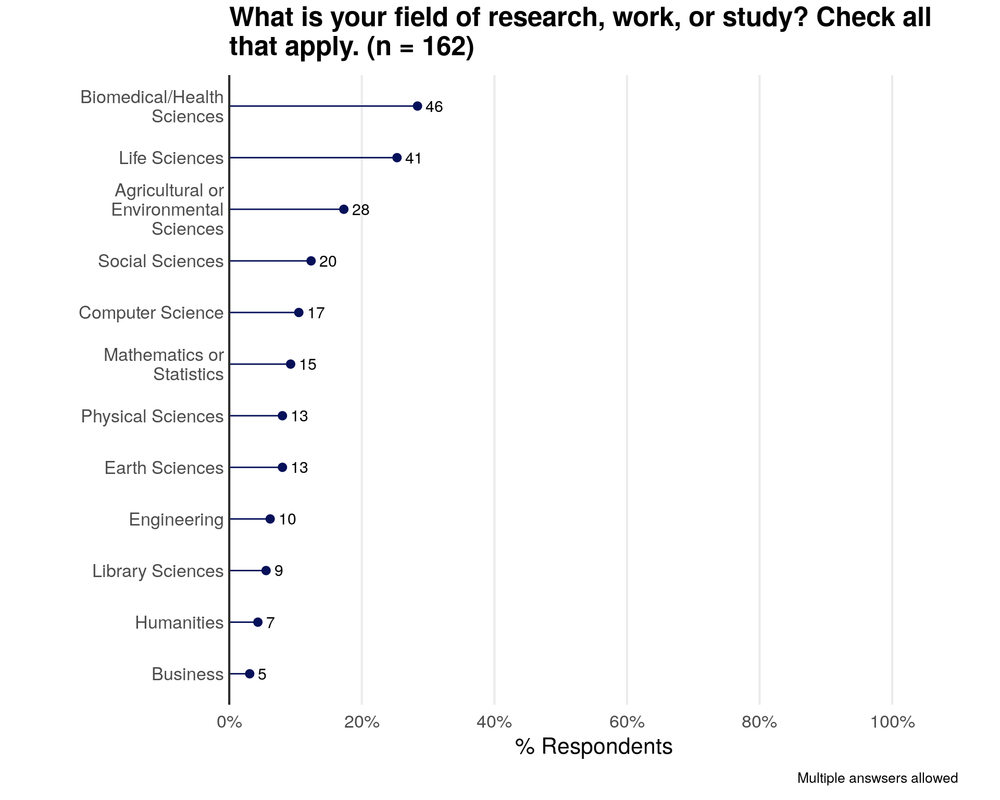
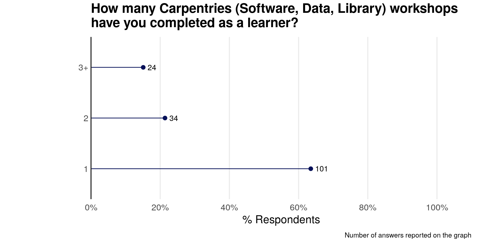
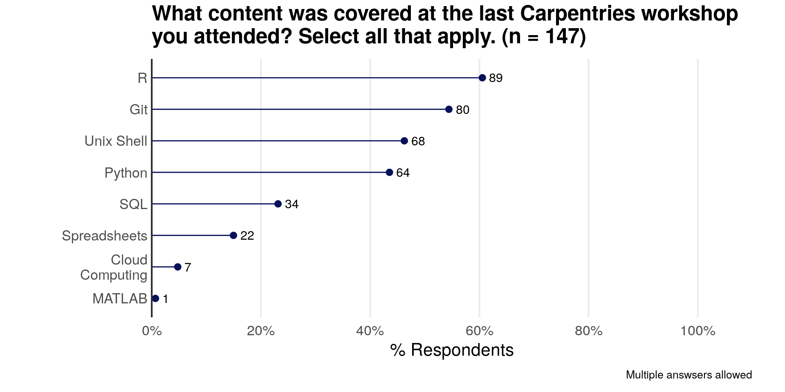
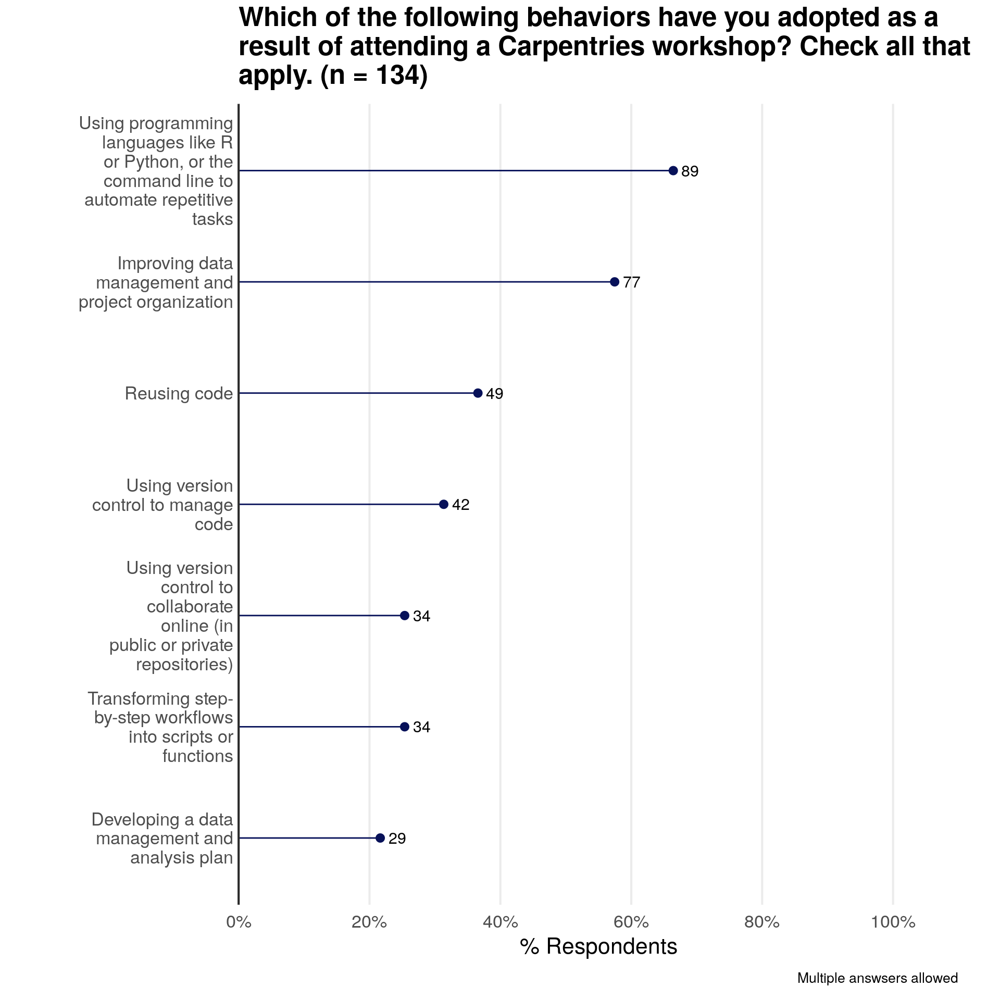
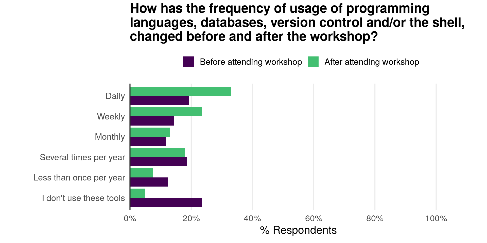
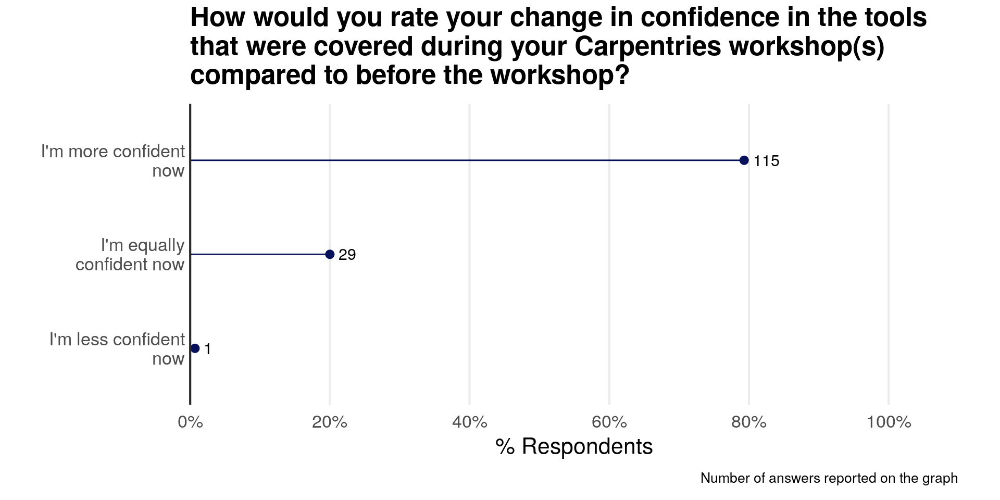
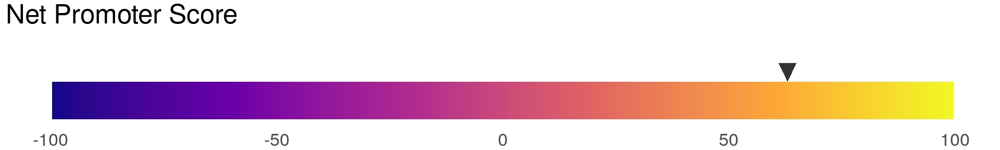

In the fourth quarter of 2019 The Carpentries collected feedback from community members who took a Carpentries workshop within six months. Find more information about this data collection period on our blog. We are excited to release the results of our long-term survey, and invite community members to use this data to champion The Carpentries far and near.
We released our first long-term survey results in October 2017. You can find the report and its source in the assessment GitHub repository.
The results included in this report only cover the data collected in 2019 (between November 1st, 2019 and January 2nd, 2020). This report includes the analysis of 176 responses but most questions are optional and specific questions have less answers.
Respondents Career Stage
The majority of long-term survey respondents are graduate students. “Other academic staff” includes Librarians, Research Software Engineers, IT Staff, and Government Research Staff.

Respondents Field of Research, Work, or Study

Number of Carpentries Workshops Completed

Time Since Completing a Carpentries Workshop
Last Carpentries Workshop Attended

Content Covered at Last Carpentries Workshop

Behaviors Adopted

Comparison of Programming Usage Pre- and Post-Carpentries Workshop

Change in Confidence in Tools Covered at Workshop

How Tools Help Respondents

Carpentries Workshop Contributing to Research
Potential Impact on Respondents

Involvement in Carpentries Community Post-Workshop
Respondents Participating in Learning Activities
Respondents Who Recommended a Carpentries Workshop
Recommendation and Net Promoter Scores


The Net Promoter Score (NPS) for our workshops according to the long-term survey is 63. The NPS varies between -100 and +100. It is calculated by substracting the percentage of respondents who are considered “Promoters” (rating of 9 or 10) and the percentage of respondents who are considered “Detractors” (rating equal or below 6). A positive NPS is deemed good, a NPS above 50 is deemed excellent, and an NPS above 70 is exceptional.
Respondents’ Gender Identity
Note: Gender identity responses apply to U.S. survey respondents only.

Respondents’ Racial/Ethnic Identity
Note: Racial/ethnic identity responses apply to U.S. survey respondents only.
| Label on Plot | Description in Survey |
|---|---|
| I prefer not to say | I prefer not to say |
| White | White (A person having origins in any of the original peoples of Europe, the Middle East, or North Africa.) |
| Hispanic or Latino | Hispanic or Latino(a) (A person of Spanish-speaking origin or ancestry and/or Latin American origin or ancestry – includes Portuguese and Brazilians.) |
| Black or African American | Black or African American (A person having origins in any of the Black racial groups of Africa – includes Caribbean Islanders and other of African origin.) |
| Asian | Asian (A person having origins in any of the original peoples of the Far East, Southeast Asia, or the Indian subcontinent including, for example, Cambodia, China, India, Japan, Korea, Malaysia, Pakistan, the Philippine Islands, Thailand, and Vietnam.) |
| American Indian or Alaska Native | American Indian or Alaska Native (A person having origins in any of the original peoples of North and South America (including Central America), and who maintains a tribal affiliation or community attachment.) |